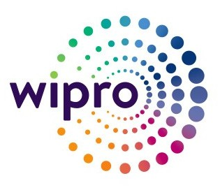

Mastercard, Dublin, Ireland | Aug 12, 2025 – Present
Joining as Data Engineer II (details to be updated post-onboarding).

Data Engineer
Wipro Limited, Bengaluru, India | Jul 2018 – Jul 2023
Responsibilities & Achievements:
Built and orchestrated scalable ETL pipelines with PySpark on Databricks for retail data (sales, inventory, customers), accelerating business reporting by ~30%.
Designed and deployed 100+ data integration workflows using Talend DI for a client in the healthcare and pharmaceutical domain, enabling batch and real-time processing of structured and semi-structured data (SAP IDocs, XML, JSON, CSV, Excel, Tables, etc.) from multiple data sources (SAP, Salesforce, APIs, S3, Kafka, DBs).
Developed ELT pipelines and data warehouse solutions on Snowflake using Medallion Architecture and Star schemas, powering 20+ dashboards and analytics use cases.
Created reusable ETL frameworks with monitoring, logging, and alerting; cutting development time by ~50% and reduced incident resolution by 5+ hours per case.
Migrated 50+ pipelines and multi-TB datasets from on-prem to AWS & Snowflake for a banking client, reducing processing time by ~25% and enabling cloud-native analytics.
Provided Talend-based production support for a manufacturing client; resolved Jira tickets and ensured uninterrupted data delivery.
Conducted code reviews and led sprint ceremonies, maintaining a 95% on-time delivery rate and a 90% client satisfaction score.
Mentored junior engineers, conducted KT sessions, and authored comprehensive technical documentation to enforce coding standards.
Collaborated closely with stakeholders, business users, and cross-functional teams to gather requirements, align on data goals, and deliver pipelines that supported key business initiatives and decision-making.
Awards & Recognition:
Extraordinaire Award: Presented for delivering critical client deliverables ahead of schedule while ensuring zero production downtime. Recognized for exceptional problem-solving skills and leadership during high-pressure release cycles.
Trail Blazers Award: Honoured for introducing innovative ETL framework enhancements and automation scripts that reduced data pipeline execution time by 20% and cut manual intervention by over 40%.
Five Habits Award: Awarded for consistently demonstrating Wipro’s core values — responsiveness to client needs, end-to-end ownership of deliverables, collaborative teamwork across global teams, and proactive communication with stakeholders.